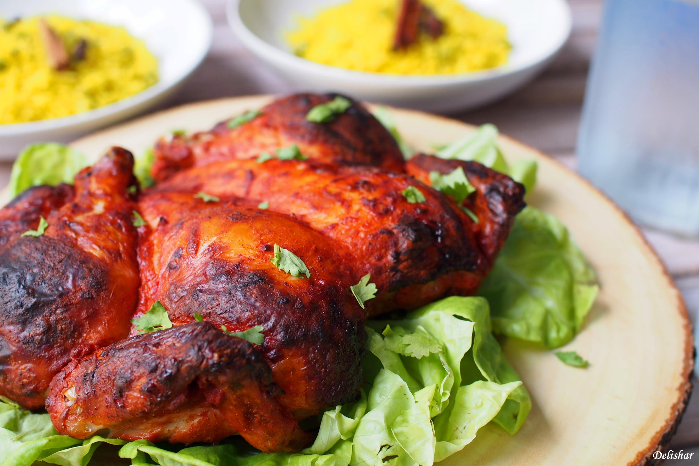

Tandoori Chicken

Description
Tandoori chicken is another North Indian dish that may have been around in
3000 BC. Tandoori Chicken derives its name from the vessel it's cooked in,
known as a Tandoor Oven. It is a cylindrical-shaped oven that is powered
by burning wood or charcoal. The Tandoor Oven is made of either clay or
metal and offers a distinct taste to meals cooked within it. Tandoori
Chicken consists of chicken marinated for a few days in a mixture of
yogurt and tandoori masala, a blend of traditional Indian spices.
Following this, the chicken is then cooked.
Ingredients
- 2 pounds chicken, cut into pieces
- 1 teaspoon salt
- 1 lemon, juiced
- 1 ¼ cups plain yogurt
- ½ onion, finely chopped
- 1 clove garlic, minced
- 1 teaspoon grated fresh ginger root
- 2 teaspoons garam masala
- 1 teaspoon cayenne pepper
- 1 teaspoon yellow food coloring
- 1 teaspoon red food coloring
- 2 teaspoons finely chopped cilantro
- 1 lemon, cut into wedges
Steps
-
Remove skin from chicken pieces, and cut slits into them lengthwise.
Place in a shallow dish. Sprinkle both sides of chicken with salt and
lemon juice. Set aside 20 minutes.
-
In a medium bowl, combine yogurt, onion, garlic, ginger, garam masala,
and cayenne pepper. Mix until smooth. Stir in yellow and red food
coloring. Spread yogurt mixture over chicken. Cover, and refrigerate for
6 to 24 hours (the longer the better).
-
Preheat an outdoor grill for medium high heat, and lightly oil grate.
-
Cook chicken on grill until no longer pink and juices run clear. Garnish
with cilantro and lemon wedges.